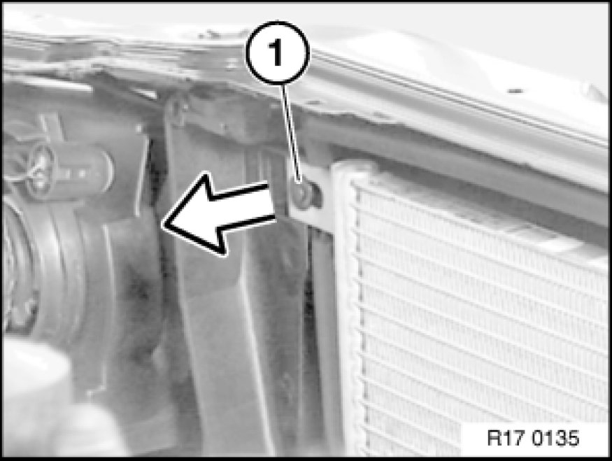
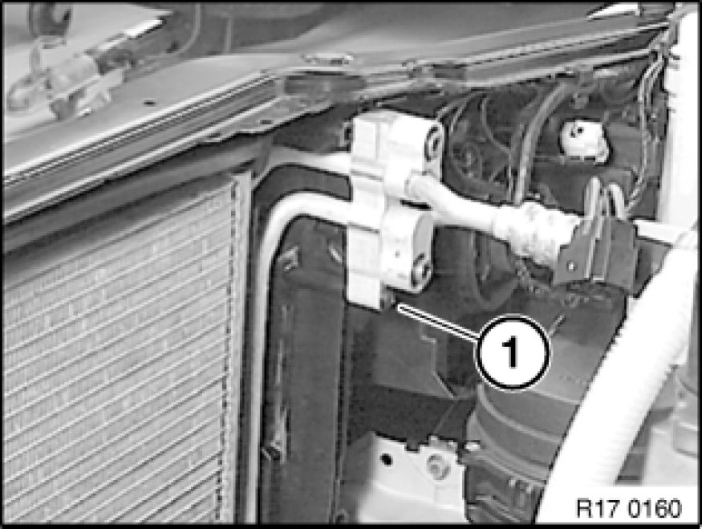
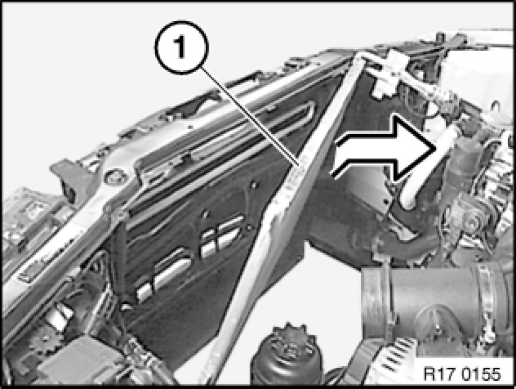
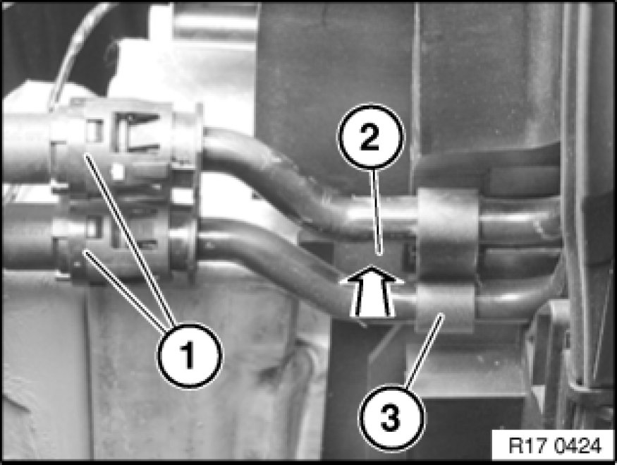

Power Steering Fluid Cooler: Service and Repair
17 11 370 - Removing and installing/replacing cooling loop for power steering

Warning!
Danger of scalding!
Only perform this work after engine has cooled down.

Important!
When working on the oil, coolant or fuel circuit, you must protect the alternator against contamination.
Cover alternator with suitable materials.
Failure to comply with this procedure may result in an alternator malfunction.

Note:
After completing this operation, check fluid level in tank of power steering system Service and Repair.
Remove radiator.

Lift out expansion rivet (1).

Release screw (1).

Remove A/C condenser towards rear top from fixtures.
Tilt condenser towards engine, taking care not to damage condenser.
Note:
Lines of A/C system remain connected to condenser.

Press lines (1) in direction of cooling loop, pull black locking ring towards rear. Keep locking ring pressed and detach lines (1) from cooling loop.
Important!
Catch and dispose of emerging fluid.
Press lock (2). Pull cooling loop (3) of power steering towards rear out of module carrier.
Add final details to vehicle.
Check cooling system and power steering for leaks.